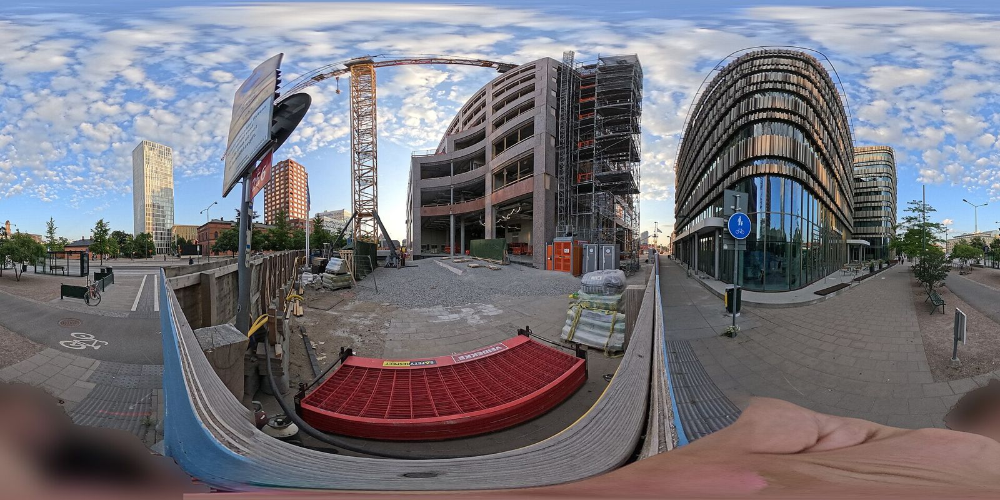
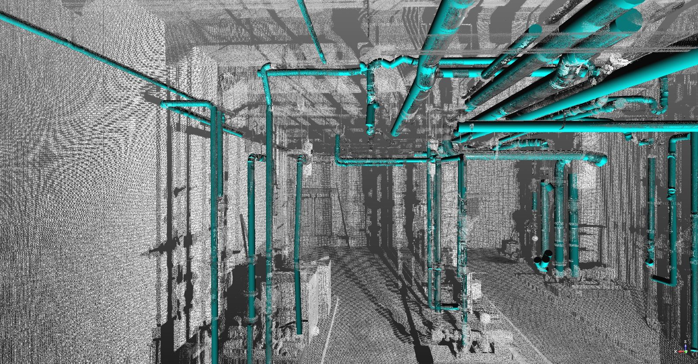
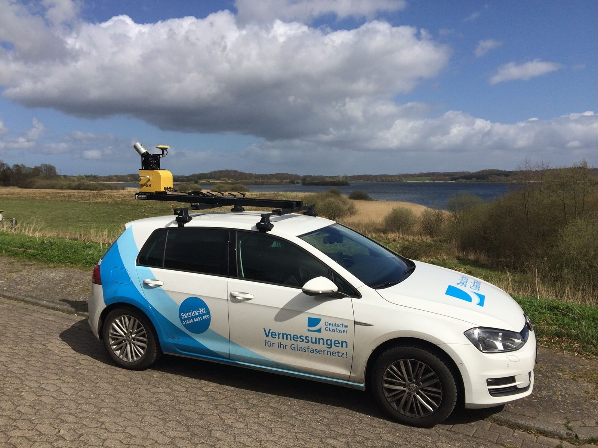
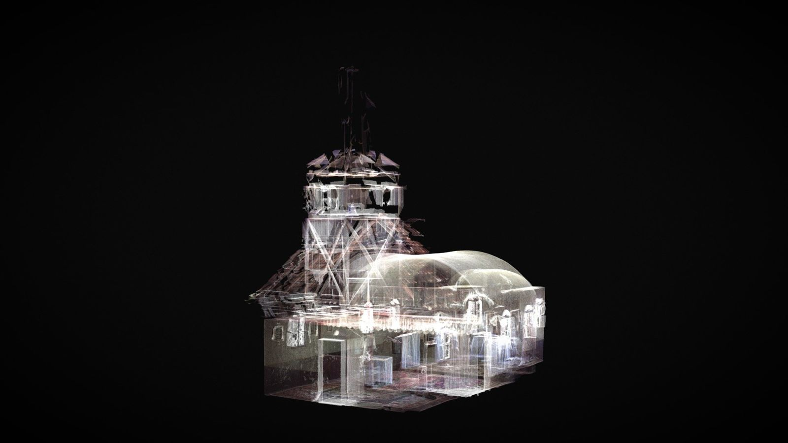

03. Reality Capture는 현 시대에 어떻게 사용되고 있는가
범위 렌즈: 전 산업을 훑되 건설·AEC를 주 렌즈로 삼는다. 그래서 1장이 가장 두껍고, 나머지 산업은 "AEC와 무엇이 다른가"를 기준으로 짧게 정리했다.
이 문서를 읽는 법
- 사례마다 마지막에
파이프라인: 장비 → 소프트웨어 → 산출물(사용자)한 줄을 달았다. 추상적인 효용이 아니라 누가 무엇을 들고 나가는지를 보려는 장치다. - 출처 뒤 대괄호는 출처의 성격이다.
[벤더]는 공급사 자사 자료,[제3자]는 언론·조사기관,[학술]은 논문,[공공]은 정부·공공기관 문서를 뜻한다. - 벤더 사례집의 절감 수치는 제품을 팔려고 쓴 글에 실린 숫자다. 제3자 벤치마크와 같은 무게로 읽으면 안 된다. 이 문서에서는 벤더가 주장한 수치임을 문장 안에 명시했다.
- 모든 출처의 확인 날짜는 2026-09-21이다.
- 출처를 찾지 못한 판단은 문장 끝에
(추정)으로 표시했다.
1. 건설·AEC
건설에서 Reality Capture가 파고든 지점은 대체로 하나다. "지금 현장이 어떤 상태인지"를 말로 다투지 않고 데이터로 확정하는 일. 진행률, 설계 대비 오차, 준공 상태, 분쟁 증거가 전부 같은 뿌리에서 갈라져 나온다.
1.1 시공 진행률 추적 — 360 워크
Devcon Construction은 캘리포니아 산타클라라의 NVIDIA 본사 현장(8개 층, 약 160만 제곱피트)을 OpenSpace로 기록했다. 현장 인력이 안전모에 360 카메라를 달고 걸어 다니며 주마다 세 가지 워크를 찍는다. 구역 전체를 도는 area walk, 방 단위로 들어가는 room walk, 마감에 덮이기 전 상태를 남기는 event walk다. 한 개 층 28만 제곱피트를 도는 데 30분이 걸렸고, 다른 소프트웨어로는 하루가 걸리던 일이라고 사례집은 적었다. 파일럿 단계에서 경쟁 제품 대비 2~3배, 넓은 구역에서는 10배 빠르다는 것도 벤더 사례집의 주장이다. 현장소장은 직접 나가 보지 않고 가상 워크스루로 공정을 갱신했고, RFI 처리와 목업 검토에도 같은 기록을 썼다. (출처: https://www.openspace.ai/resources/case-studies/devcon-construction-uses-openspace-to-capture-a-complete-record-of-1-6m-square-foot-project-site/ , 확인 2026-09-21) [벤더]

파이프라인: 안전모 장착 360 카메라 → OpenSpace(촬영 경로를 도면에 자동 매핑) → 날짜별 가상 워크스루(현장소장·공무팀·발주처)
1.2 as-built 대 설계 비교 — scan-to-BIM과 scan-vs-BIM
두 작업은 이름이 비슷하지만 방향이 반대다. scan-to-BIM은 점군에서 모델을 새로 만들고, scan-vs-BIM은 이미 있는 모델과 점군을 대조한다. 시공 중에 주기적으로 돌리기 쉬운 쪽은 후자다(추정).
Cintoo의 진행 모니터링 워크플로가 전형적이다. 지상 스캐너나 SLAM 스캐너로 받은 점군을 Revit·IFC·NWD 모델과 겹치고, 밀리미터 단위로 허용 오차를 정한 뒤 부재별로 결과를 뽑는다. 결과물은 CSV다. 스캔 데이터가 부재를 얼마나 덮었는지(커버리지 비율), 실제 시공이 모델에서 최대·평균·최소 얼마나 벗어났는지가 부재 ID와 함께 줄줄이 나온다. 이 표를 현장 엔지니어는 시공 오차를 잡는 데 쓰고, 품질팀은 합부 판정에, 발주처는 기성 근거에 쓴다. (출처: https://cintoo.com/en/blog/progress-monitoring , 확인 2026-09-21) [벤더]
학계 쪽 정리도 봐 둘 만하다. You, Chen, Xue가 Automation in Construction 182권(2026, 논문번호 106755)에 실은 리뷰는 58개 사례를 훑어 scan-to-BIM이 규칙 기반에서 AI 기반으로 넘어가는 중이라고 정리했다. 이 논문이 짚은 문제는 두 가지다. 전통적인 scan-to-BIM은 엔지니어 수작업이라 시간과 인력이 많이 들고 사람 실수에 취약하다. 게다가 건물 생애주기 비용의 60%가 운영 단계에 몰려 있는데, as-built BIM을 손으로 만들다 보면 유지보수 자체가 늦어진다. (출처: https://doi.org/10.1016/j.autcon.2025.106755 , 저자 사전출판본 https://frankxue.com/pdf/you26automated.pdf , 확인 2026-09-21) [학술]

파이프라인: 지상 레이저 스캐너 또는 SLAM 백팩 → Cintoo·Navisworks 등에서 BIM과 정합 → 부재별 편차·커버리지 리포트(현장 엔지니어·품질팀·발주처)
1.3 준공 검수와 부재 품질 검사
공장에서 만든 부재를 현장에 싣고 오기 전에 걸러 내는 쪽으로도 쓰인다. 자연과환경은 스캔비와 함께 3차원 공간 라이다로 PC(프리캐스트 콘크리트) 품질관리를 자동화하는 기술을 검증했다고 2026년 6월 밝혔다. 설계 도면과 실제 제작된 부재를 디지털로 비교해 사람 손을 타는 검사 과정의 오차를 줄이겠다는 구상이다. 다만 보도에 정확도나 절감률 같은 정량 수치는 없었고, 기술 타당성 확인 단계라고만 나와 있다. (출처: https://www.etoday.co.kr/news/view/2593030 , 확인 2026-09-21) [제3자]
파이프라인: 3차원 공간 라이다 스캐너 → 설계 도면과 실측 점군 대조 → 부재별 합부 판정(제조사 품질팀·현장 검수자)
1.4 안전 점검
가설재는 형상이 규칙적이라 자동 판독을 붙이기 좋은 대상이다(추정). 연세대 Juhyeon Kim 등은 ISARC 2025에서 4족 보행 로봇에 지상 라이다를 얹어 비계 점군을 모으고, 딥러닝 세그멘테이션으로 부재를 분류한 뒤 클러스터링과 들로네 삼각분할을 거쳐 3D CAD 모델을 복원하는 절차를 발표했다. CAD 모델링 단계에서 F1 점수 97.44%를 보고했고, 발판 누락이나 수평재 오설치 같은 이상을 짚어 냈다. (출처: https://yonsei.elsevierpure.com/en/publications/integrated-framework-for-scaffold-monitoring-from-point-cloud-acq/ , 확인 2026-09-21) [학술]
파이프라인: 4족 보행 로봇 + 지상 라이다 → 딥러닝 세그멘테이션·CAD 복원 → 비계 이상 목록(안전관리자)
1.5 물량 산출과 토공
드론 사진측량으로 토공량과 야적더미 체적을 재는 일은 이제 현장에서 특별한 축에 들지 않는다(추정). RTK 드론에 지상기준점을 더해 쓰면 체적 오차가 1~3% 수준이라는 게 서비스 업체들이 내세우는 숫자이고, 사람이 하루 걸려 걷던 부지를 한 시간 안쪽 비행으로 끝낸다는 설명도 같은 출처에서 나온다. 수백 점을 재던 일이 수백만 점을 재는 일로 바뀐 셈인데, 이 수치는 전부 서비스 판매자의 자료라는 점을 감안해야 한다. (출처: https://www.impactaerial.co.uk/2026/07/28/drone-stockpile-measurement-the-2026-professional-guide-to-volumetric-surveys/ , https://www.propelleraero.com/blog/how-stockpile-volume-measurement-works-in-drone-surveying-with-propeller/ , 확인 2026-09-21) [벤더]
규모가 작은 계측까지 쓰임새가 내려오고 있다. 미국 연방도로청은 휴대형 라이다(pocket lidar)로 굴착 트렌치를 재는 실험을 보고서로 냈다(FHWA-HRT-25-015, Pocket Lidar for Trench Measurement). (출처: https://highways.dot.gov/sites/fhwa.dot.gov/files/FHWA-HRT-25-015.pdf , 확인 2026-09-21) [공공]
파이프라인: RTK 드론 + 지상기준점 → 사진측량 처리(Propeller·Pix4D 등) → 정사영상·DSM·체적 리포트(공무팀·토공 협력사·발주처)
1.6 하자 관리
하자 관리에서 Reality Capture가 하는 일은 두 가지로 갈린다. 하나는 위치 특정이다. 부재별 편차 리포트에 오차가 큰 부재가 ID로 찍혀 나오므로, 하자 목록을 도면 위 좌표에 붙일 수 있다(1.2 참조). 다른 하나는 덮이기 전 상태를 보존하는 일이다. 마감 뒤에 문제가 터졌을 때 벽을 뜯지 않고 촬영 기록에서 배관·전기 위치를 확인하는 용도인데, OpenSpace 사례의 event walk가 바로 이 목적으로 돌아간다. (출처: https://www.openspace.ai/resources/case-studies/devcon-construction-uses-openspace-to-capture-a-complete-record-of-1-6m-square-foot-project-site/ , 확인 2026-09-21) [벤더]
다만 표면 아래는 어느 쪽으로도 보이지 않는다. 철근 부식이나 배면 공동처럼 표면 뒤에 있는 결함은 스캔으로 잡히지 않으므로 별도 비파괴검사가 따라붙어야 한다(3장 참조).
파이프라인: 360 카메라 또는 지상 스캐너 → 날짜별 기록과 BIM 편차 리포트 → 위치가 찍힌 하자 목록(하자 담당·유지관리팀)
1.7 공정 분쟁 증거
시공사가 공기 연장이나 추가 공사비를 주장하려면 그 시점 현장이 어땠는지를 입증해야 한다. Cintoo는 편차 리포트의 수요자 가운데 하나로 "법적·계약적 증거가 필요한 시공사"를 직접 꼽는다. (출처: https://cintoo.com/en/blog/progress-monitoring , 확인 2026-09-21) [벤더]
사진이 증거로 인정받으려면 세 가지가 필요하다. 무엇을 찍었는지, 언제 어디서 찍었는지, 찍은 뒤 손대지 않았는지다. 그래서 타임스탬프와 GPS 메타데이터를 박아 찍고, 변경 이력이 끊기지 않는 시스템에 보관하는 쪽으로 실무가 정리되는 중이다. (출처: https://www.kraaft.com/en/articles/construction-photo-evidence-how-site-documentation-wins-disputes-and-insurance-claims-2026-guide , 확인 2026-09-21) [벤더]
360 촬영이 여기서 유리한 이유는 화질이 아니라 선택 편향이 없다는 점이다. 사람이 찍을 곳을 고르면 불리한 장면은 빠지지만, 한 번 걸으면 모든 프레임이 도면에 자동으로 매핑되므로 사람의 선택 없이 커버리지가 고르게 남는다. (출처: https://www.openspace.ai/blog/construction-dispute-documentation/ , 확인 2026-09-21) [벤더] 참고로 "건설 분쟁의 70%가 문서 부실에서 비롯된다"는 식으로 자주 인용되는 FMI 통계가 있는데, 확인된 경로가 벤더 블로그의 재인용이라 이 문서에서는 근거로 쓰지 않았다.
파이프라인: 안전모 360 카메라 또는 지상 스캐너 → 도면 매핑과 타임스탬프·위치 메타데이터 보존 → 시점별 현장 기록(공무팀·법무팀·중재 대리인)
2. 부동산·시설관리
부동산은 건설과 달리 설득이 목적이다. 오차 몇 밀리미터가 아니라 "가 보고 싶게 만드는가"가 성패를 가른다.
Matterport가 모아 놓은 통계를 보면 미국 매물의 약 22%에 가상 투어가 붙어 있고(하버드 비즈니스 스쿨 자료 인용), 디지털 트윈을 쓰는 부동산 회사는 15%에 그친다(Statista 인용). 가상 투어가 있으면 31% 더 빨리 팔린다는 수치도 함께 실려 있는데, 이건 Matterport 자사 블로그를 출처로 단 자기 인용이라 따로 봐야 한다. (출처: https://matterport.com/learn/real-estate-photography/stats , 확인 2026-09-21) [벤더]
시설관리 쪽 쓰임새는 결이 다르다. 준공 도면과 실제가 어긋난 건물에서 도면을 갱신하고, 설비를 교체하기 전에 반입 동선과 이격을 확인하는 일이다. 여기서는 가상 투어의 완성도보다 치수를 믿을 수 있느냐가 먼저다(추정).
파이프라인: 스테이션형 3D 카메라(Matterport Pro 계열) 또는 360 카메라 → 클라우드 재구성(평면도·치수 자동 생성) → 웹 가상투어·평면도(중개사·자산운용사·FM팀)
3. 토목·인프라
도로·교량·터널은 대상이 길고 선형이라 정지식 스캔만으로는 감당이 안 된다. 그래서 차량에 스캐너를 얹고 지나가며 훑는 방식이 자주 쓰인다.

미국 연방도로청은 터널 점검용 레이저 스캐닝을 이렇게 설명한다. 스캐너를 차량에 얹고 위치를 기록하며 통과시키거나, 표지를 깔아 놓고 여러 지점에서 고정 촬영해 합친다. 빔을 360도로 돌려 터널 형상을 나선형으로 훑기 때문에 표지판·설비 같은 부속물까지 같이 들어온다. 잡히는 것은 타일 탈락과 박리, 큰 균열 같은 표면 손상, 누수, 예상치 못한 변위, 부속물 위치와 건축한계 저촉이다. 장점으로는 취득이 빠르고, 국부 변형과 건축한계 문제를 잡아내며, 비접촉이고 기하 왜곡이 없다는 점을 든다. 한계도 같은 문서에 적혀 있다. 표면 아래 결함은 못 보고, 레이저 입사각과 표면 반사율에 결과가 흔들리며, 가시선 안에 든 것만 보인다. (출처: https://infotechnology.fhwa.dot.gov/laser-scanning/ , 확인 2026-09-21) [공공]
국내에서는 국토교통부가 스마트 건설기술 로드맵에서 드론 측량과 BIM, 가상시공을 공정 안으로 들이겠다는 방향을 밝혀 왔다. (출처: https://www.industrynews.co.kr/news/articleView.html?idxno=27635 , 확인 2026-09-21) [제3자]
파이프라인: 차량 탑재 라이다(MMS) 또는 고정식 지상 스캐너 → 점군 정합·단면 추출 → 터널 내공 단면·변위 보고서(시설 관리주체·점검 용역사)
4. 플랜트·에너지
가동 중인 플랜트는 도면과 실물이 다르다. 수십 년간 개조가 쌓였고 그 기록이 도면에 반영되지 않은 경우가 흔하다. 셧다운 기간에 배관을 갈아 끼우려는데 현장에 가 보니 안 들어가는 상황이 여기서 나온다.
그래서 셧다운 전에 스캔해 점군을 확보하고, 신규 설계를 이 점군 위에 얹어 간섭을 미리 잡는다. 스풀을 공장에서 만들어 와 한 번에 맞추는 것(First Time Right)이 목표다. AGV나 컨베이어, 로봇을 들이는 개조에서도 순서는 같다. (출처: https://www.asbuilt3d.com/post/pre-turnaround-laser-scanning-checklist , https://iscano.com/real-world-applications-laser-scanning-lidar/industrial-plant-3d-scanning/ , 확인 2026-09-21) [벤더]
이 분야 자료에는 "14일 셧다운에서 72시간 단축, 240만 달러 절감" 식의 사례가 자주 실린다. 다만 확인 가능한 출처가 전부 스캔 서비스 제공사의 블로그이고 제3자 검증본을 찾지 못했다. 방향은 그럴듯하지만 숫자 자체는 근거로 쓰기 어렵다.
파이프라인: 지상 레이저 스캐너(Leica RTC360 등) 또는 SLAM 스캐너 → 점군을 배관 설계 도구에 정합 후 간섭 검토 → 스풀 제작도·셧다운 작업 순서(공사팀·제작사·운전팀)
5. 문화재와 디지털 아카이브
이 분야는 목적이 하나다. 사라질 것을 미리 찍어 두는 일.
앤드루 탤런(Andrew Tallon)은 2010년부터 폴 블레어(Paul Blaer)와 함께 노트르담 대성당을 레이저로 스캔했다. 스캐너를 쉰 번 옮겨 가며 내외부를 훑어 10억 점이 넘는 데이터를 남겼다. 2014년 캔터베리 대성당에서는 55억 점을 모았다. 탤런은 2018년 세상을 떠났고, 이듬해 노트르담에 불이 났다. 그가 남긴 기록은 복원 과정에서 원형을 확인하는 참조 자료가 됐다. (출처: https://en.wikipedia.org/wiki/Andrew_Tallon , 확인 2026-09-21) [제3자]
조직적으로 같은 일을 하는 곳이 CyArk다. 2003년 벤 카크라(Ben Kacyra)가 세운 비영리 단체로, 레이저 스캔과 사진측량으로 유산을 기록하고 데이터를 공개한다. Google Arts & Culture와 함께 연 Open Heritage에서 18개국 27개 유적의 3D 데이터를 공개했다. (출처: https://artsandculture.google.com/story/open-heritage-sharing-3d-data-with-the-world/-AXx62Vr4vwlKA , https://www.cyark.org/whoweare/ , 확인 2026-09-21) [제3자] [벤더]

한계는 남는다. 점군은 형상을 남기지만 재료의 결, 가공 흔적, 구조가 하중을 받아 온 이력까지 담지는 못한다. 복원 장인이 참조할 수 있는 범위는 어디까지나 "그때 그 형상"이다(추정).
파이프라인: 지상 레이저 스캐너와 사진측량 → 점군 정합·메시·텍스처 생성 → 아카이브 데이터셋·웹 3D 공개본(보존 담당자·복원 장인·연구자)
6. 제조·물류
Amazon은 기존 창고를 라이다로 스캔해 점군을 만든다. 벽과 게이트는 물론 컨베이어와 보관 설비까지 약 3cm 정밀도로 잡는다고 밝혔다. 이 점군을 Autodesk Construction Cloud에서 3D 모델로 바꾸고 ProModel 시뮬레이션에 넣어 인력 효율과 장비 가동을 따져 본다. 라이다 도입으로 모델링이 몇 주 앞당겨졌고, 디지털 트윈 구축 시간이 기존 방식 대비 최대 80% 줄었으며, 공간 활용률은 15%, 노동 생산성은 40% 개선됐다고 한다. 자동화 설비에 돈을 넣기 전에 시뮬레이션으로 먼저 따져 보자는 발상이다. 다만 이 수치는 AWS가 자사 블로그에 실은 것이다. (출처: https://aws.amazon.com/blogs/supply-chain/aws-simulation-and-digital-twin-to-increase-warehouse-productivity/ , 확인 2026-09-21) [벤더]
공장 레이아웃 쪽에서는 실내 모바일 매핑이 자주 쓰인다. 전기·전자 작업대 제조사 Elabo가 NavVis M6로 14,000제곱미터를 6시간에 스캔했다고 공급사 사례집에 적혀 있다. 생산을 세우지 않으려면 이 정도 속도가 필요했을 것이다(추정). 점군은 NavVis IndoorViewer와 IPO.Plan을 거쳐 공장 증설 시뮬레이션에 들어갔다. (출처: https://www.navvis.com/blog/68-how-digital-twins-are-being-used-in-factory-planning , 확인 2026-09-21) [벤더]
파이프라인: 실내 모바일 매핑 시스템(NavVis M6 등) 또는 지상 라이다 → IndoorViewer·ProModel·IPO.Plan → 레이아웃 시뮬레이션·이격 검토(생산기술팀·설비팀)
7. 게임·영화 버추얼 프로덕션
촬영 현장에서는 정확도보다 눈에 어떻게 보이는가가 기준이다. 밀리미터를 맞출 필요가 없고 대신 머리카락, 연기, 반사면처럼 기존 메시 기반 재구성이 감당하지 못하던 소재를 담아야 한다.
2026년 현재 실무의 무게중심은 3D 가우시안 스플래팅으로 옮겨 갔다. 상업 작업 기준으로 NeRF는 같은 목적에서 3DGS에 자리를 내줬는데, 렌더가 훨씬 빠르고 실시간·웹 파이프라인에 그대로 얹히기 때문이다. 3DGS는 대상을 단단한 기하로 복원하려 들지 않고 공간에 퍼진 빛의 색과 투과를 잡는 방식이라, LED 볼륨에 띄울 실사 배경을 만드는 데 맞는다. 스캔 결과를 Unreal Engine에 넣어 LED 월에 띄우면 스튜디오 안에서도 "로케이션 촬영"이 가능하다. (출처: https://www.kiriengine.app/blog/3DGSvsPhotogrammetryvsLiDAR , https://www.broadcastnow.co.uk/comment/what-is-gaussian-splatting/5219454.article , https://visualskies.com/title-projects/enhancing-3d-scanning/ , 확인 2026-09-21) [벤더] [제3자]
파이프라인: 드론·지상 라이다·사진측량 리그 → 3DGS 또는 사진측량 재구성 → Unreal Engine 에셋·LED 월 배경 플레이트(VFX 아티스트·촬영팀)
8. 자율주행 HD맵
자율주행용 지도는 정확도 요구가 다른 분야와 자릿수가 다르다. 차선 단위 형상과 도로 경계, 교통 통제 요소를 센티미터급으로 담아야 한다. 시장 규모는 2026년 13억 4천만 달러에서 2033년 24억 3천만 달러로, 연평균 8.9% 성장이 예상된다. HERE, Baidu, TomTom, NVIDIA, Mobileye가 주요 공급자로 꼽힌다. 구축만큼 어려운 게 갱신이라, 커넥티드 차량이 올린 센서 관측으로 변화를 자동 탐지하는 쪽으로 기울고 있다. Mobileye는 비전 데이터를 크라우드소싱해 지도를 갱신한다. (출처: https://www.marketsandmarkets.com/Market-Reports/hd-map-autonomous-vehicle-market-141078517.html , 확인 2026-09-21) [제3자]
한국은 국가가 직접 만든다. 국토지리정보원이 정밀도로지도를 구축·갱신하며, 차선과 도로시설, 표지시설을 3차원 전자지도로 제작한다. 갱신은 선의가 아니라 규정으로 돌아간다. 도로관리청은 신설·확장 공사의 경우 준공(개통) 7일 전까지 MMS 표준자료를 직접 제출해야 하고, 개량·보수는 14일 전까지 통보해야 한다(2021년 규정 개정 기준). (출처: https://www.koit.co.kr/news/articleView.html?idxno=84833 , 근거 규정 "정밀도로지도의 구축 및 갱신 등에 관한 규정" 국토지리정보원고시 제2023-4338호 https://www.law.go.kr/LSW/admRulLsInfoP.do?admRulSeq=2100000229524 , 확인 2026-09-21) [제3자] [공공]
파이프라인: MMS 차량(라이다와 카메라, GNSS/INS) → 점군 정합·차선/표지 벡터화 → 정밀도로지도 레이어(자율주행 개발사·지도 사업자·국토지리정보원)
9. 보험·재난 대응
재난 현장에서는 정확도보다 속도가 전부다.
2018년 캘리포니아 캠프파이어 때가 대표 사례다. 앨러미다 카운티 보안관실을 비롯한 16개 드론 팀이 이틀 동안 516회를 비행해 7만 장을 찍었고, 약 17,000에이커를 지도로 만들었다. 장비는 DJI Phantom 4, 처리는 DroneDeploy였다. 데이터를 받은 뒤 하루 만에 대화형 지도가 나왔다. 뷰트 카운티는 이 지도를 공개했고, 주민은 여기서 받은 이미지를 보험사에 제출해 며칠에서 몇 주 걸리던 청구 처리를 앞당겼다. FEMA 지원 신청에도 쓰였다. (출처: https://dronelife.com/2019/01/08/california-drones-stitch-helpful-aerial-maps-in-wake-of-deadly-camp-fire/ , 확인 2026-09-21) [제3자]
파이프라인: 소형 드론(DJI Phantom 4 등) → DroneDeploy 클라우드 정사영상·3D 재구성 → 공개 피해 지도·청구 첨부 자료(지자체·보험 손해사정사·주민)
10. 한계와 실패 요인
앞 장에는 잘된 사례만 모았다. 실제 도입 현장이 걸려 넘어지는 지점은 따로 있다.
데이터 용량. 레이저 스캐너가 뱉는 점군은 저장 공간과 인프라를 크게 잡아먹는다. 기존 파일 포맷과 데이터 구조 자체가 이 정도 규모를 다루도록 만들어지지 않았다. (출처: https://doi.org/10.1016/j.autcon.2025.106755 , 확인 2026-09-21) [학술]
차폐와 현장 여건. 가구나 천장에 가려진 것은 스캐너가 못 보면 그만이다. 안 보이는 것을 알고리즘이 추측하면 틀린 모델이 나온다. 현장 점군은 심한 차폐와 적치물, 들쭉날쭉한 점 밀도, 노이즈가 겹쳐 경계가 뭉개지고 구조가 모호해진다. (출처: https://doi.org/10.1016/j.autcon.2025.106755 , 확인 2026-09-21) [학술] 레이저 스캔은 가시선 안에 든 것만 보이고, 입사각과 표면 반사율에 따라 결과가 흔들린다. (출처: https://infotechnology.fhwa.dot.gov/laser-scanning/ , 확인 2026-09-21) [공공]
표면 아래는 안 보인다. 철근 부식, 배면 공동, 내부 박리처럼 표면 뒤에 있는 결함은 스캔으로 잡히지 않는다. Reality Capture는 비파괴검사를 대체하지 못하고 그 앞단에서 위치를 좁혀 줄 뿐이다. (출처: https://infotechnology.fhwa.dot.gov/laser-scanning/ , 확인 2026-09-21) [공공]
좌표계 정합. 스캔 커버리지가 모자라거나 정합 오차가 끼면 인식 정확도가 그만큼 떨어진다. (출처: https://doi.org/10.1016/j.autcon.2025.106755 , 확인 2026-09-21) [학술] 여러 회차 스캔을 시간순으로 비교하는 진행률 추적에서는 회차 간 기준점이 어긋나는 순간 비교 자체가 무의미해진다(추정).
자동화의 한계. 점군 의미 분할을 딥러닝으로 돌리려면 대규모 라벨 데이터가 필요한데, 현장에서 이 데이터를 모으기가 어렵다. 라벨링 비용이 크고 차폐와 센서 노이즈가 품질을 깎는다. (출처: https://doi.org/10.1016/j.autcon.2025.106755 , 확인 2026-09-21) [학술]
숙련 인력. 전통적인 scan-to-BIM은 결국 엔지니어가 손으로 모델을 세우는 일이라 시간과 인력이 들고 사람 실수도 생긴다. (출처: https://doi.org/10.1016/j.autcon.2025.106755 , 확인 2026-09-21) [학술]
갱신 주기. 점군은 찍은 순간의 사실일 뿐이다. 현장이 바뀌면 곧바로 낡는다. 한국이 정밀도로지도 갱신을 선의에 맡기지 않고 통보 기한을 규정으로 못 박은 것도 같은 이유다. (출처: https://www.koit.co.kr/news/articleView.html?idxno=84833 , 확인 2026-09-21) [제3자]
ROI 입증. 도구를 샀다고 효과가 따라오지 않는다. Procore와 Dodge Construction Network가 북미·EMEA·ANZ의 건설 실무자 1,500명 이상을 조사한 결과, 도구를 충분히 쓰는 집단은 82%가 프로젝트 성과가 나아졌다고 답한 반면 가볍게 쓰는 집단은 31%에 그쳤다. 차이를 낸 건 교육, 그리고 경영진이 같은 방향을 보는지와 프로세스를 일관되게 지키는지였다. (출처: https://www.procore.com/blog/from-beginner-to-expert-the-roi-of-optimized-construction-tech-adoption , 확인 2026-09-21) [벤더] [제3자]
수치의 출처 편중. 이 문서를 쓰면서 가장 자주 부딪힌 문제다. 시간 절감과 비용 절감 수치의 대부분이 공급사 사례집에서 나온다. 제3자 벤치마크는 학술 논문 쪽에 있지만 그쪽은 정확도와 알고리즘 성능을 재지, 현장 ROI를 재지 않는다. 벤더 수치와 학술 수치 사이에 "실제 현장에서 돈이 얼마나 굳었는가"를 독립적으로 검증한 자료가 없다.
11. 질문 3에 대한 답
현재 Reality Capture의 쓰임새는 세 갈래로 굳었다.
첫째, 기록이다. 덮이기 전에 찍어 두는 일. 360 워크, 문화재 스캔, 재난 직후 항공 촬영이 여기 든다. 정확도보다 빠뜨린 데가 없느냐가 먼저다.
둘째, 대조다. 찍은 것을 설계나 이전 회차와 맞춰 보는 일. scan-vs-BIM, 진행률 추적, 배관 간섭 검토, PC 부재 검수가 같은 계열이다. 산출물은 언제나 편차 목록이고, 이게 돈이 오가는 판단(기성, 재시공, 청구)으로 바로 이어진다.
셋째, 입력이다. 다른 시스템에 먹이는 일. 창고 시뮬레이션의 기하 정보, 자율주행 HD맵, LED 월 배경 플레이트가 여기 든다. 이때 점군은 최종 산출물이 아니라 원재료다.
건설·AEC는 이 세 갈래를 모두 쓰는 드문 산업이다. 다만 셋째 계열, 그러니까 점군을 다른 엔진에 먹이는 방향은 제조·물류나 자율주행 쪽이 더 멀리 가 있다.
용어 후보
- scan-to-BIM — 레이저 스캔 점군에서 as-built BIM 모델을 새로 만드는 작업 — https://doi.org/10.1016/j.autcon.2025.106755
- scan-vs-BIM — 스캔 점군을 기존 BIM 모델과 대조해 설치 여부와 시공 오차를 판정하는 작업 — https://cintoo.com/en/blog/progress-monitoring
- as-built BIM — 설계 모델이 아니라 실제 시공된 상태를 반영한 BIM 모델 — https://doi.org/10.1016/j.autcon.2025.106755
- 차폐(occlusion) — 다른 물체에 가려 스캐너 시야에 들어오지 않아 점군에 구멍이 생기는 현상 — https://doi.org/10.1016/j.autcon.2025.106755
- 정합(registration) — 서로 다른 위치와 시점에서 찍은 점군을 하나의 좌표계로 합치는 작업 — https://doi.org/10.1016/j.autcon.2025.106755
- 커버리지 비율 — 특정 부재를 스캔 데이터가 얼마나 덮었는지 나타내는 지표. 낮으면 편차 판정을 믿을 수 없다 — https://cintoo.com/en/blog/progress-monitoring
- MMS(이동형측량시스템) — 차량에 라이다와 카메라, GNSS/INS를 싣고 주행하며 도로를 3차원으로 측량하는 시스템 — https://www.koit.co.kr/news/articleView.html?idxno=84833
- 정밀도로지도 — 자율주행 지원을 위해 차선·도로시설·표지시설을 3차원으로 제작한 전자지도. 국토지리정보원이 구축·갱신한다 — https://www.law.go.kr/LSW/admRulLsInfoP.do?admRulSeq=2100000229524
- HD맵 — 차선 단위 형상과 도로 경계, 교통 통제 요소를 센티미터급 정확도로 담은 자율주행용 지도 — https://www.marketsandmarkets.com/Market-Reports/hd-map-autonomous-vehicle-market-141078517.html
- 정사영상(orthomosaic) — 항공·드론 사진의 기하 왜곡을 보정해 지도처럼 축척이 일정하도록 이어 붙인 영상 — https://dronelife.com/2019/01/08/california-drones-stitch-helpful-aerial-maps-in-wake-of-deadly-camp-fire/
- 3D 가우시안 스플래팅(3DGS) — 대상을 단단한 기하로 복원하는 대신 공간에 분포한 빛의 색과 투과를 재현하는 실시간 렌더링 기법 — https://www.broadcastnow.co.uk/comment/what-is-gaussian-splatting/5219454.article
- LED 볼륨 — 실사 배경을 띄운 LED 월로 둘러싼 촬영 세트. 스캔 에셋을 Unreal Engine으로 띄워 쓴다 — https://www.kiriengine.app/blog/3DGSvsPhotogrammetryvsLiDAR
- event walk — 마감에 덮이기 전 상태를 남기려고 특정 시점에 도는 360 촬영 — https://www.openspace.ai/resources/case-studies/devcon-construction-uses-openspace-to-capture-a-complete-record-of-1-6m-square-foot-project-site/
- First Time Right — 스캔 기반 간섭 검토로 사전 제작한 배관 스풀이 현장에서 한 번에 맞도록 하는 목표 — https://www.asbuilt3d.com/post/pre-turnaround-laser-scanning-checklist
- 포켓 라이다 — 스마트폰이나 태블릿에 들어간 소형 라이다 센서. FHWA가 굴착 트렌치 계측용으로 시험했다 — https://highways.dot.gov/sites/fhwa.dot.gov/files/FHWA-HRT-25-015.pdf
- Open Heritage — CyArk와 Google Arts & Culture가 공개한 문화유산 3D 데이터 아카이브 — https://artsandculture.google.com/story/open-heritage-sharing-3d-data-with-the-world/-AXx62Vr4vwlKA